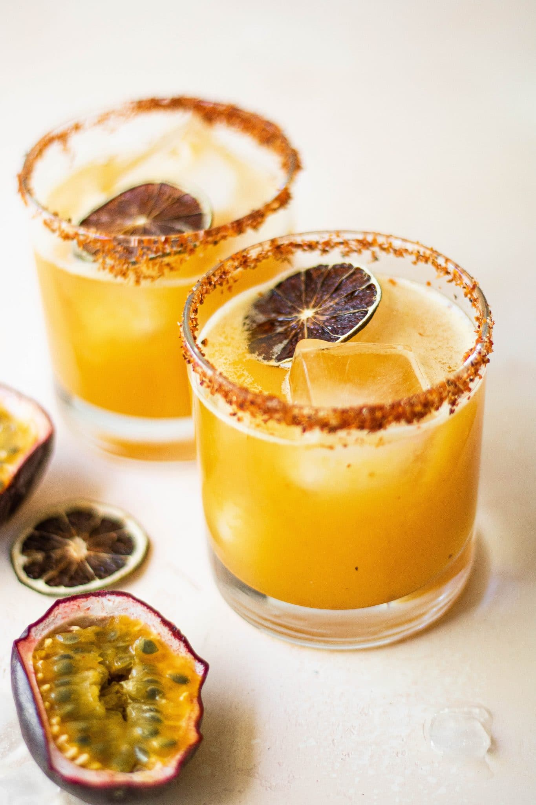

Passion Fruit Margarita

This passionfruit margarita will be the perfect poolside sipper
A Passionfruit Margarita is a refreshing cocktail that
combines tangy passionfruit flavors with the classic
elements of a margarita. It features freshly squeezed lime
juice, tequila, triple sec, and a splash of sweet passionfruit
syrup. Served over ice, it's a tropical and vibrant twist on a
beloved cocktail.
Ingredients
- 1 tablespoon coarse sal
- 1 lime wedge
- 1 1/2 cups ice, divided
- 5 ounces passion fruit juice
- 2 fluid ounces silver tequila
- 3/4 fluid ounces triple sec
- 3/4 fluid ounces lime juice
Instructions
- Sprinkle salt onto a plate. Moisten the rim of a glass with
lime wedge and press the moistened rim into the salt; fill
the glass with ice.
- Fill a cocktail shaker half-full with ice
- Add passion fruit juice, tequila, triple sec, and lime juice to the shaker
- Seal and shake vigorously until outside is frosted, 10 to 15 seconds.
- Strain mixture into the glass and stir. Garnish with lime wedge and enjoy!
Side Note:
My favorite brand of passion fruit juice is Goya®,
which can be found in the international aisle of your
grocery store.